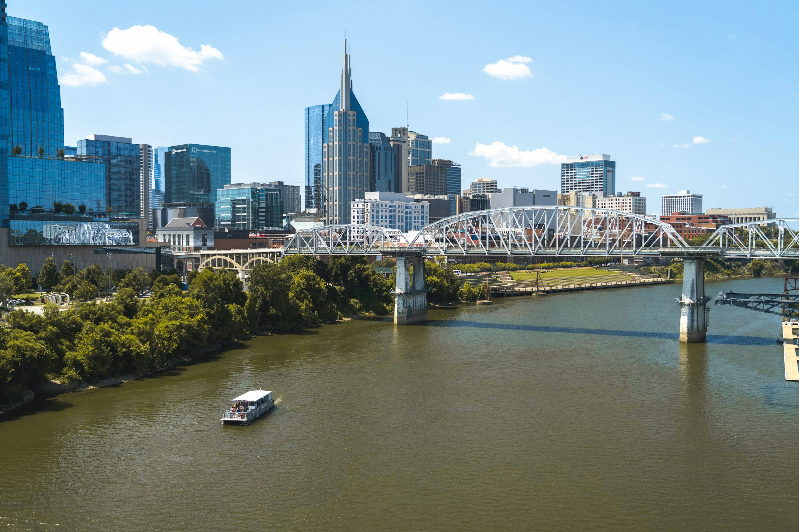

01 /
Affordable
Housing
Help more neighbors find a place to call home through the development and preservation of affordable housing.
Local roots. Lasting possibility.
A stronger city starts with its people. We invest in the ideas, places, and partnerships that help our neighbors move forward.

Our purpose
We believe opportunity should reach every corner of Nashville.
The Citizens Fund brings that belief to life by investing in the people, projects, and partnerships that strengthen our community.
From a place to call home to the confidence to take the next step, we support the foundations of a more connected, resilient city.
Where we put our purpose to workOur focus
Four connected priorities.
One commitment to a stronger Nashville.
Help more neighbors find a place to call home through the development and preservation of affordable housing.
Build confidence with practical financial education that helps individuals and families manage and grow their resources.
Connect the potential in our community with pathways to work, helping people prepare for their next opportunity.
Strengthen the places that bring us together, from community centers and health clinics to neighborhood small businesses.
A city of possibility
Nashville’s next chapter is being written in its neighborhoods. By the people who live here. The organizations who show up. And the partners who see what’s possible.
That’s where the Citizens Fund comes in. We bring a community-first perspective to the investments that help our city grow stronger, together.
Be part of what comes nextPartner with us
Working on something that could strengthen Nashville? Tell us about it. We welcome conversations with organizations and partners who share our commitment to this city.
An idea. A project. A shared purpose. Let’s begin there.
Tell us who you are, who you serve, and what drives your work.
Describe your project, its focus, and the support you’re looking for.
Outline the impact you hope to make and connect through our inquiry form.
A little more clarity
Our four priorities are affordable housing, financial literacy, workforce readiness, and community development in Nashville. You can select more than one area when sharing your project.
The inquiry form welcomes nonprofits, developers and housing partners, community organizations, educational institutions, and other organizations. An inquiry is a starting point for a conversation; it does not establish grant eligibility or a funding commitment.
Bring your organization’s information, a primary contact, a short description of your project, the kind of support and funding you need, and the impact you hope to have. You can also share your project stage and anticipated timeline.
Yes. The inquiry form includes grant funding, partnerships, capital stack participation, and other types of support. Tell us what your project needs so the conversation can start in the right place.